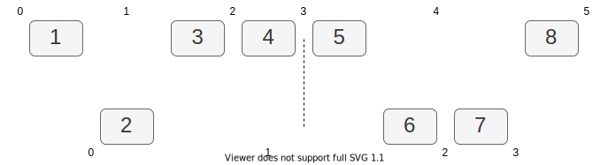
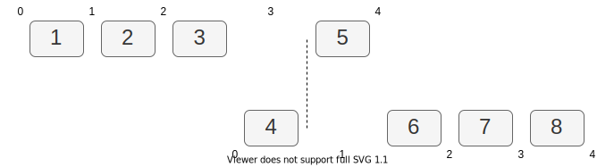
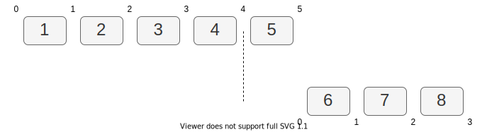
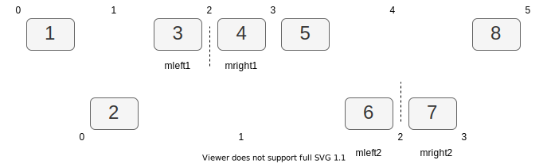

继续刷题。
依然不愿意在挑题目上花太多时间，就挑了序号最小的 Hard。
传送门（考虑到有人就是不想看英文，也给出中文社区。推荐刷英文版。）
英文：https://leetcode.com/problems/median-of-two-sorted-arrays/
中文：https://leetcode-cn.com/problems/median-of-two-sorted-arrays/
题目
一句话题意
给定两个有序数组 nums1 和 nums2，找出（他们合并后）的中位数。
例子
例子1
|
|
例子2
|
|
约束
约定输入中，两个数组不会同时为空。
假定两个数组大小分别为
m和n，时间复杂度不超过O(log (m+n))。（原文是 should be，我认为 『should not exceed』更准确。）
测试用例
之前说过，准备纸笔 和 先写单元测试 是推荐的做法。测试代码看着量多，但是不费脑，还能在后续调试帮忙减轻头脑负担。
|
|
篇幅所限随便放几个测试用例。实际操作中，除了能想到的边界条件，还应该随机生成一定量的测试用例，以免有没考虑到的 case。
中位数
这里抠一下 中位数 的定义。这个问题必须写测试用例时就理解清楚，不然写出来的用例都是错的。
中位数是指，一个有序数组里，排在 中间的数 。这个说法比较好理解，但是不严谨：偶数个元素的数组怎么办？中间连续出现重复元素怎么办？
更准确的定义应该是：选定一个数（不一定包含在数组里），让数组里 大于 和 小于 这个数的元素数量，都 不超过总元素数量的一半 ，这个数就是中位数。
举几个例子：
1, 2, 3, 4, 5，中位数是 3。我们可以说因为 3 在中间；也可以说，小于 3 的数有两个，大于 3 的数也有两个，都不超过 5 的一半。
1, 2, 3, 4得出 2.5 ，同理可解释。1, 2, 3, 3, 3，中位数是 3。我们同样可以说，3 在（顺序的）中间。但容易产生一些理解上的问题，拐不过弯。像（大小的）中间不是 2 吗？ 中位数怎么区分是哪一个 3，3 同时也在 第四 和 第五 的位置，怎么会是中位数呢？
我们这样看，小于 3 的数有两个，大于 3 的数有 零 个，都不超过半数。除此以外无论我们选取任何一个数（2？ 2.5 ？3.5？），都会使一边的数 大于等于 三个。
需要特别说明的是，按照这个定义，2 到 3 之间的任意一个数（不包括两个端点）都是 1, 2, 3, 4 的中位数。但这样不利于操作。所以实际操作上是这样规定的：
- 奇数个元素时，中位数就是有序序列下标在中间那个数。
- 偶数个元素时，中位数是中间两个数的平均值。
直接动手
既然清楚了中位数的定义和一般的获取操作，那么顺利成章的做法就是：
- 得到一个总的有序数组
- 根据数量的奇偶，取中间的数，或者中间两个数的均值。
刷题老手会发现，这种做法时间复杂度是不达标的，然后直接跳到下一节。（其实真正老手直接就不会看这篇 [苦笑]）
但我还是把这种做法写出来。一下子看出最优解并不容易。除了新手会卡思路，有经验的人也会有不熟悉题目类型，或者纯粹脑子短路，然后卡壳。想不出更好方案的时候，按题面意思尝试模拟或者暴力解决，哪怕明知道复杂度不达标，也比干耗着强。
往往写着写着，就有思路了。当然，比较少有地，也有想复杂了，暴力 （可能还要一点小优化），就直接把问题解决的。
归并法：
|
|
两个数组本来就是有序的，直接归并一次是最简单的做法了。
不过很容易发现，我们并不需要知道归并之后的整个有序数组，只需要知道归并后，排在中间的 一个数（奇）或两个数（偶）。只要在归并时，记录那两个数就行，没有必要真的创建一个数组放归并结果。我们甚至不用归并完，归并到中间就行了。
归并法改进：
|
|
归并需要把两个数组遍历一遍，所以时间复杂度是 O(m + n) ；开辟了新数组存放结果，所以额外内存空间也是 O(m + n) 。
改进后，额外内存空间变成了常数 O(1) ，时间减半，但是数量级还是 O(m + n) 。显然超出了题目 O(log(m + n)) 的要求。
二分查找
解题熟练之后，先做复杂度分析，就能大概知道不同解法的性能，继而决定应该尝试哪种解法。
就这道题而言：
取巧的做法，是留意题目给出的线索。
时间复杂度中出现 对数
log()，往往意味着最优解是二分查找。但不是所有题目都会给出时间复杂度提示。
有些题目没有提示，直接在 运行时间 和 使用内存 上限制。我以前出题就干过这种事，给一个数据量特别大的测试用例，把 时间 和 内存 设成暴力法过不了。
这时记住， 获取信息是有代价的 。获取更多信息 => 消除了更多信息熵 => 做更多运算 => 更高的时间复杂度。题目只要求 中位数 一个信息，你却把整个数组排了序，也就是把其他位置的数都知道了；无论最后这些结果你要不要，计算的成本都是要付的。
只把中位数查找出来，那么 在有序数组里，二分查找比顺序查找高效 。
查找目标是什么呢？ 这时要回想 中位数 的定义：
找一个数，让（两个）数组里 大于 和 小于 这个数 的 元素数量，都不超过总数量的一半。
考虑到偶数个元素的情况，就是找相邻的两个数。又考虑到这两个数分布在两个数组里，可能一边一个，也可能都在一边，可以两边都找两个，也就是一共四个，再比较。
为了方便讨论，先不考虑重复元素，不会有元素跟中位数相等。那么两边都不超过总数一半，就变成了两边都刚好是总数一半。

例如 1, 3, 4, 5, 8 和 2, 6, 7 两个数组。中位数是 4 和 5 之间，4.5 。

再给一个例子，还是 4.5 。
但这是数字少，直接看出来。实际操作时，我们不确定中位数会在哪个数组里面。
对于第一个例子，我们从第一个数组找到 4 和 5，第二个数组找到 2 和 6，再从这四个候选里找中位数。
类似地，第二个例子，找到 3 和 5，还有 4 和 6，四个数里再找中位数。
这四个数怎么得到？ 试。
我们可以在两个数组里，分别找一个位置，切一刀，变成两段，切的地方左右的两个数，就成为了候选。
切的可选位置，要包括数组的最前面和最后面，也就是把整个数组都放一边。因为会有例子三这样的情况：

当数组二选择在 0 这个位置划分时，候选数字就只有 6。为了清楚地表示 6 是右边的数字，我们可以记作 NA, 6 ，表示左边没有。
两个数组分别有 m + 1 和 n + 1 种分法，那是有 (m + 1)(n + 1) 种组合吗？
先看确定分对地方的条件：
- 两个数组分到左边的元素加起来，跟分到右边的元素加起来，数量一致，都是一半。
- 对于四个候选中位数，左边两个数 ≤ 右边两个数。
条件 1 非常好理解，两边数量都不一致，肯定不是中位数。有这个条件，一旦一个数组的划分的位置定了，另一边也只有一个选择让两边数量一致。让我们重新回到例子一：
当数组二选择位置 0 时，数组一唯一的选择是 4；1 对应 3，2 对应 2 …… 假定其中一个数组选择在位置 i 划分，那么另一边只能选择 (m + n)/2 - i 。然后我们发现，数组一不能选 0，因为数组二没有位置 4；也不能选 5，因为没有位置 -1。由此可得，位置只能在较小的数组选，只有 n + 1 种可能。
条件 2 看图更好理解，还是例子一：

如果像图中所示，分别在两个数组的位置 2 划分，条件 1 满足，左右加起来都是四个数。但两个划分点并非同一个点。体现在数字上就是不满足条件 2。
为了方便讨论，我们把划分点两边的候选数字，分别称作 mleft1, mright1 和 mleft2, mright2 。当选中全局的中间点时，划分线应该对上，两个 left 都 小于等于 两个 right。由于同一个数组内是有序的，我们只需要确保 mleft1 ≤ mright2 和 mleft2 ≤ mright1 。那么这个划分里，mleft2 (6) > mleft1 (4) ，就不满足条件 2。
把这些全部加起来，要做什么就清楚了：
- 在元素较少的数组，选一个位置分成两部分。这一步可以用二分查找 。根据条件 1 ，这个位置定了，另一边的位置也定下来了。
- 看是否满足条件 2。不满足回到第一步。
- 两个条件都满足，在候选数字里选中位数。
时间复杂度很容易可以知道，是 O(log n) 。
为了理清主要步骤，暂时忽略了一些边界条件，像 元素 是奇数怎么处理，中位数附近多个重复元素怎么处理等等。直接在代码上解决。
代码
二分查找：
|
|
我感觉磨下标、边界条件，才是这道题最麻烦的地方。
几个要点：
- 要在元素少的数组上做二分，为了保持代码简单，如果发现数组二更小，直接交换两个数组位置。
- 二分查找要小心处理下标，包括加减乘除，区间开闭。保证一定不能漏，尽量不重（有些情况是允许有重复的）。
- 划分点取最左最右时，会少了一个候选数。把左边的数初始化为负无穷（代码实现上是最小 int 值），右边初始化为正无穷（最大 int 值），可以简化判断。
- 由于下标从 0 开始，
size / 2作为下标，在偶数时取的是中间点右边的数，奇数时刚好是中间。代码里，以 二分值pr为右值，pr - 1为左值，所以遇到奇数时，直接取右值即可。
这份代码在英文版最终成绩是 时间 16ms （打败 61.59%），内存 5.8 MB（打败 25%），应该还有优化空间。不过时间关系，先到这里。

本文为本人原创，采用知识共享 “署名-非商业性使用-相同方式共享” 4.0 (CC BY-NC-SA 4.0)”许可协议进行许可。
本作品可自由复制、传播及基于本作品进行演绎创作。如有以上需要，请留言告知，在文章开头明显位置加上署名（Jayce Chant）、原链接及许可协议信息，并明确指出修改（如有），不得用于商业用途。谢谢合作。
请点击查看协议的中文摘要。